叶青：建议设立公共卫生安全副省长
原文链接 备份链接 非常时期，武汉成了全国人民挂念、祈福的城市。封城后，武汉人民的真实生活是什么样？ 随着疫情援助的展开，又有哪些容易忽略的问题？ 正和岛自1月26日起特别推出《叶青：我在武汉疫区的第N天》专栏。叶青是一位定居武汉40年的 …
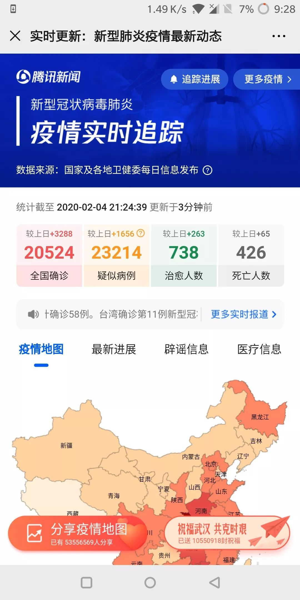
今日立春
疫情形势严峻
不盲目歌颂
不滥抒情
要说真话
要做实事
我们致敬那些在前线与病毒抗争的英雄。作为摄影师，我们尤其致敬在前线用镜头记录这个事件的记者和摄影师们。但我们知道，这毕竟是一场特殊的战斗，并不是每个人都能冲到前线去的，我们要保护好我们自己，保护好我们的家人，不给社会添乱，也是在这种环境下所能做的一点贡献。
作为这个大事件的亲历者见证者，我们也希望留下我们普通人在被这大事件裹挟中着的生存日常，因为我们每个人都是这段历史的一部分，连同这个庚子年春节，必将给我们留下不可磨灭的记忆。
2020年1月30日
由《无处安放》摄影师
吴国勇（湖北襄阳人）
提议
吴国勇、风面
联合发起
（点击蓝色文字可查看详情）
征集公告
在摄影新媒体「风面」首发后
得到众多响应参与
现选登部分照片、文字如下

▲ 吴国勇，湖北襄阳，老岳父家中，2020年1月24日，除夕年夜饭
除夕的时候武汉已经宣布封城，虽然襄阳还没有正式的确诊病例报告，但据说已有不少疑似病人了，气氛因此显得有些压抑。席间老岳母说你们还是赶紧回去吧，不然封城就走不了啦。饭罢各自散去，当即连夜驱车往深圳狂奔。一路畅通，一路检阅沿途的盛世烟火。1300公里只要16个小时，大年初一中午就回到了深圳的家。回深圳第一件事是到社区报备，在家自我隔离中，每日量体温上报，目前家人状态良好。
除夕夜奔是有生以来的第一次，一路冷风凄雨，急惶惶如丧家之犬，所思所感无以言说。

▲ 天使，深圳南山区家中，2020年1月24日，除夕
今年初，儿子刚结婚，儿子儿媳都是独生子女，为了不为难俩孩子，俩亲家早已约好今年在深圳过年。原计划过年期间带北方来的亲家好好地逛逛深圳，游玩海边，一场的疫情，只能都呆家里。首次两亲家合照全家就在这非常的时期，不一般的年。
今天的宅家年就是为了以后年年欢乐团圆。
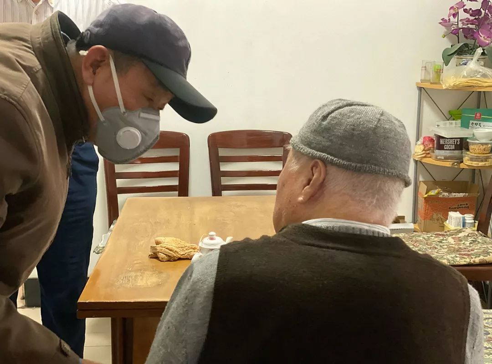
▲ 王峰，2020年1月26日，大年初二，家中
大年初二那天全家在94岁高龄的姥爷家吃完饭匆匆告辞。因为春节是兄弟姐妹难得聚齐的时刻，以往每年都会拍摄一张全家福，但今年却由于全国疫情的来袭，以及姥爷身体欠佳而没有拍成，留下了遗憾。
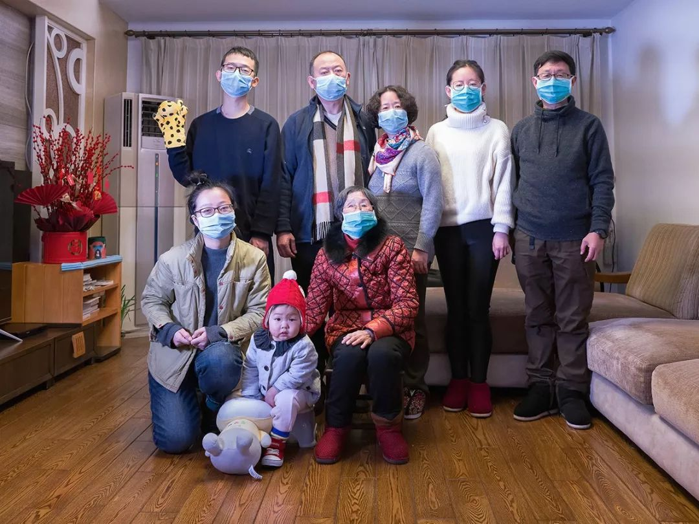
▲ 何，江苏昆山家中，2020年1月26日，大年初二
这是一张缺席的全家福。按惯例我每年会拍一张全家福，可今年妻子响应上级号召，放弃休假带领呼吸与危重医学科全体人员坚守在一线岗位了。

▲ 邓全科，广东省韶关市沙溪镇，2020年1月30日，大年初六
春节前我母亲在湖南省手术，我们夫妻返回老家陪护，母亲术后身体好转，我们到了广东省的岳母家，这时新冠病毒疫情已经比较严重了，到处封路量体温，宅在家中的老婆和岳母站在阳台上，朝窗外的防疫宣传车张望——“快点好起来吧”!

▲ 宫女士，海南东方市自家门前，2020年1月25日，大年初一
婆婆、女儿女婿、亲家、我（左二）与先生。女儿怀有4个多月的身孕，夫妻俩及亲家从北京赶来过春节，不想遇到了这场疫情。疫情让我们过了一个特殊而祥和的春节。经历这场疫情，希望我们的生活更健康，民众更文明，国家更强大。坚信一切都会好起来。加油!
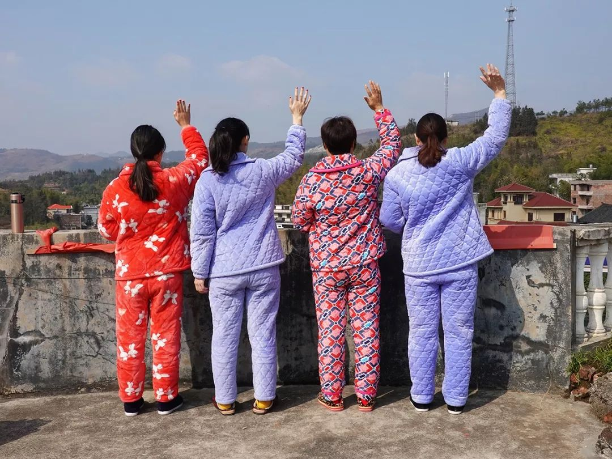
▲ 李永红，湖南娄底老家楼顶，2020年1月28日，正月初四
大年三十晚上，面对突如其来的“武汉肺炎”事件，我们一家人统一了思想，春节期间不串门、不拜年，在自己家里面自娱自乐，规定上午睡到自然醒，中午饭后留下三个人打扑克牌，其余的可以自己KTV唱歌，不管唱得好坏都要唱，这样过了三天，莫名的有些伤感，我便上了顶楼，在顶楼上我看到了岳父岳母种的菜，那份生机给了我活力，便在楼顶恢复正常的每天一万步的锻炼。我的自娱自乐也把大舅子一家子和我老婆女儿都感染了，趁太阳出来天气暖和了，大家都到楼顶来活动了！我想，春节不能出门本来是一件此生难遇的灾难性事件，既然发生了，一家人天天在一起重复各种日常，也可以让自己多一些思考吧！拍照时突然发现我们竟然整个春节都没有换上年前购买的新衣服，全都是一套睡衣过完了春节，仔细回味，这种无奈的日子过得也好快……
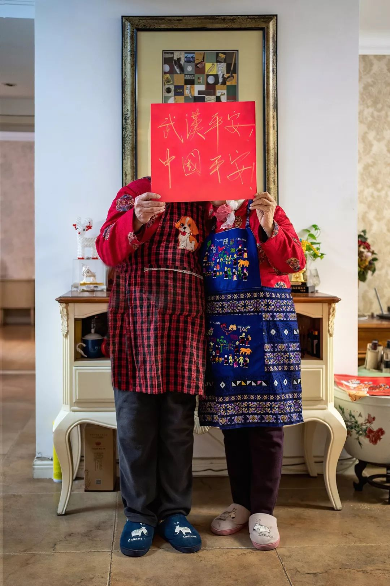
▲ 朱文霞，山东兖州家中，2020年1月30日，大年初六
我和老伴。新春佳节“新冠”肆虐，孩子们各自宅在自己的小家里，兖州的老家没有了往年的热闹，疫情期间，吃饭、睡觉、听书、读书，看新闻、刷微信、听网课、整理图片，还是忙得不亦乐乎。
天天关注着疫情的发展。武汉加油！中国平安！严冬即将过去，春天就要到来！

▲ 风影
我的孙子鸡蛋仔两岁多了，因为还小，他还不能感受到外面充斥着“病毒”的世界，每每给我们这个家带来欢声笑语。
生活依然要继续。这些日子， 除了值班、防疫等工作的电话联系协调， 我就宅在家里帮忙做饭和陪伴鸡蛋仔。等鸡蛋仔长大以后，我会给他讲讲这个春节所发生的事情。
祝愿大家平安健康！祝疫情防控阻击战早日胜利！
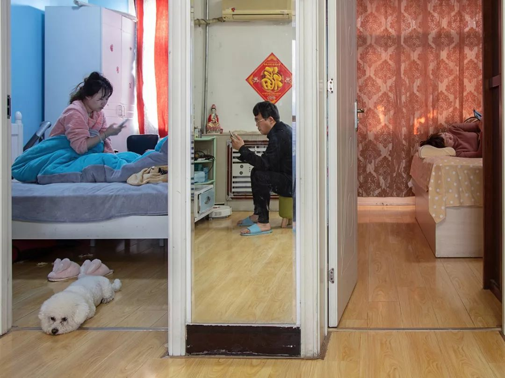
▲ 草民，山东省济宁市家中，2020年1月31日，正月初七
随着全国疫情不断升级，无论是单位还是社区，严格控制人员外出次数，每天从早到晚，除了吃饭和上厕所，媳妇和闺女在卧室床上老是摆弄着手机。家里的小狗，一会走到这屋一会跑到那屋，实在无聊就趴在地上迷糊一会。喜欢外出拍照的我，也被娘俩苦口婆心的劝导下只好呆在家里跟着玩手机，此时此景我用相机自拍的形式记录特殊环境下的家庭一幕。

▲ 陈有为，浙江省苍南县灵溪镇，2020年1月30日，大年初六
病毒还暂时灭不了人类，终究退去，退回到大自然，而有一天，你们一定会怀念这个被疫情不断延长的春节假期。
将混乱、荒诞、无助、绝望的时代关在门窗之外，我们得以第一次这么长时间专注并沉浸于家庭的滋养。而这恰恰是我们这些时代的小人物唯一值得珍惜的东西。
这一张照片4个人，却是4代人，左边是我的父亲，中间是我的妹妹和女儿，右边是我的奶奶。正月初四夫人出发去美国西海岸旅行，我则带着女儿到家乡苍南妹妹刚刚乔迁的新居久住。一天带女儿去看望她心心念念的爷爷和阿太。我们在爷爷家门前空地闲聊，偶发这个合影的行为。此为2020春节纪念。

▲ 小欣，深圳家中，2020年2月1日，大年初八
年前我从雪域高原的西藏回到深圳家里时还是很开心的，万万没想到今年这个年过成这样。武汉肺炎像海啸一样席卷而来，把我们的生活冲击得七零八落……我家邻居是武汉人，年前回了一趟武汉马上回来了，正在家自我隔离，吓得爸妈都不敢让我出门了，只好待在家刷刷手机看看书练练字，随意地“混”日子。我想念我援藏的林芝，想念那里的山清水秀和自由的空气。但让人郁闷的是，西藏这片最后的净土也被“新冠病毒”污染了，何时能回去还不知道。
希望这场灾难尽快过去吧。平安，中国！

▲ 商琳玲，湖北襄阳市，2020年1月25日，正月初一
每年大年三十都是我们一大家子十几口人团聚。今年的新型冠状病毒让我们居住在一个小区里亲人无法团聚。我们兄妹三人都是监狱人民警察，警察天职是服从命令，疫情来了，一切行动听指挥！哥哥年三十值班，弟弟于二十九晚入驻监号十五天与犯人同隔离，保安全，我随时待命，父母同住一个小区，听从单位大形势政策要求不出家门，这样全家没能一起吃上一顿团年饭！大年初一，为缓解压力透口气，我们一家三口开车到汉江江边拍下这张照片，以纪念这个特殊的日子。
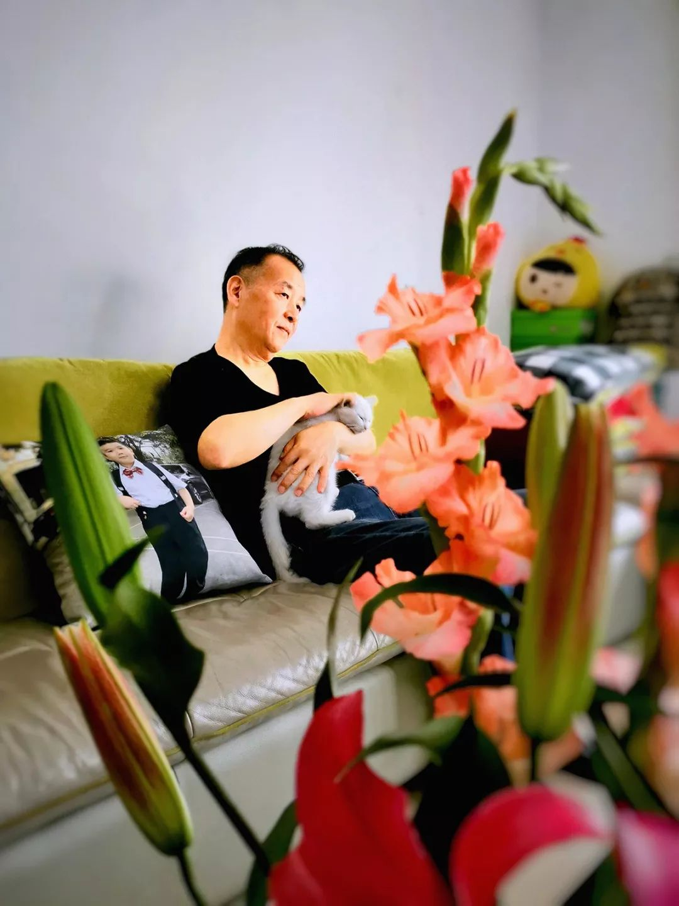
▲ 听雨，广州天河区家中，庚子年正月
原计划回河南老家陪83岁的老母亲过年的，看到武汉疫情的消息，就退票宅在广州。虽然老两口看看电视玩手机有些寂寞，但咱们不是为了不给国家添乱不是。这沙发就是我的防疫战场。
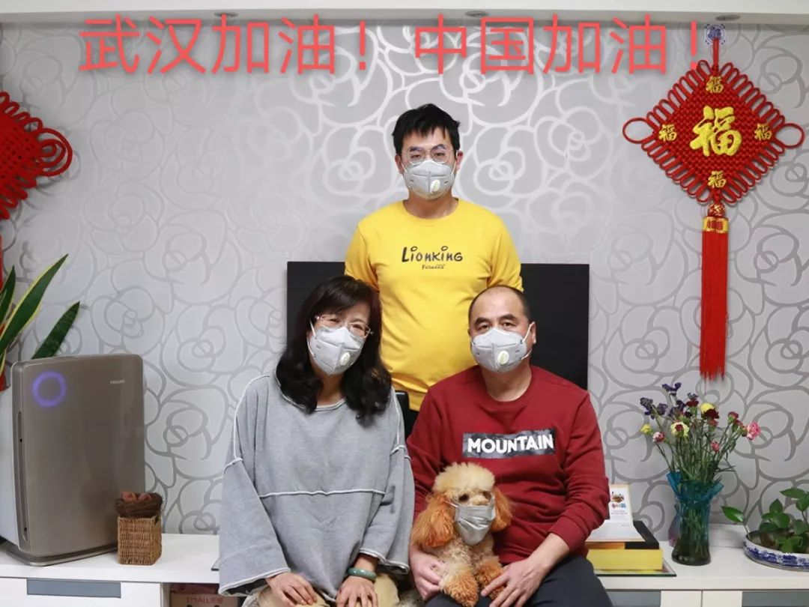
▲ 若只初见，河北雄安新区家中，2020年1月31日大年初七，我、老公、儿子和猪猪（狗狗）
一场突如其来的新型冠状病毒感染的肺炎由武汉引发全国，让这个庚子鼠年过的有些不同寻常，不出门，守住家，就是最大的爱心！当记者的儿子，也奔波在一线，今日回家，全家合影留念。没有国，哪有家，家是最小的国，国是千万家，有了强的国，才有富的家。国与家连在一起，众志成城，定会战胜疫情！
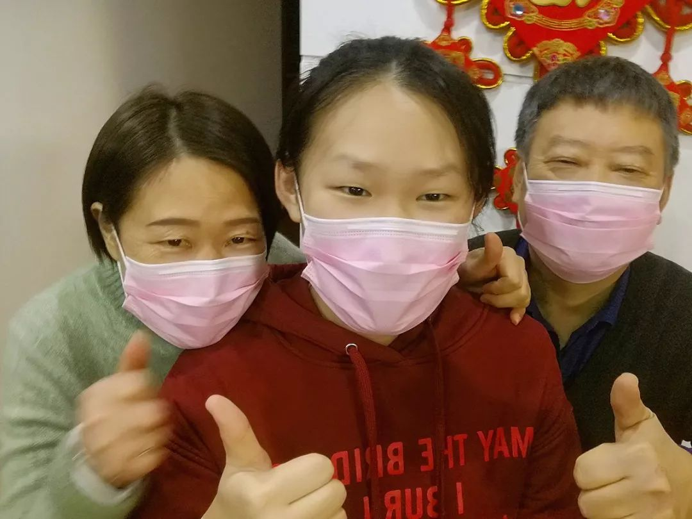
▲ 小杨同学，河南郑州家中，2020年1月30日，正月初六
以往新年总是热闹非凡，爆竹震天响，走街串巷互相拜年。然而这个春节是我长这么大以来过的最特殊的年。出门都要戴着口罩。最好待在家中，不能出门。药店的口罩，酒精异常难抢购，一件睡衣可以过完一整个春节，这种状况我还从来没有遇见过。感觉我们真成了小老鼠，躲在洞里过完了我们的“鼠年”。
这一年的开头是多苦难的，我希望苦难的过后会是彩虹。
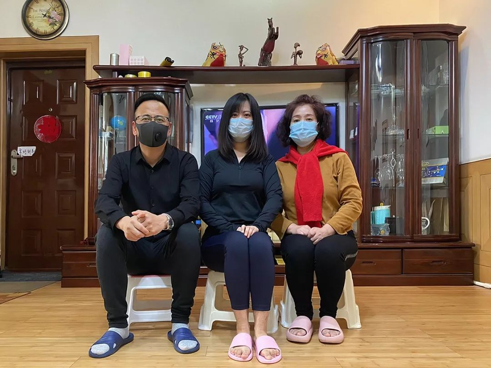
▲ 薛野，2020.1.31正月初七，山西长治家中
1月18日那天我从石家庄回到山西长治爸妈家，19号还跟我爸家中讨论“美女故宫开大奔”事件，20号就在朋友圈看到武汉新确诊136例新型肺炎病例的消息，虽然03年非典那会我还小，啥也不懂，只记得放了好长时间的假，但此消息让我马上意识到问题的严重性，赶紧去药房买了一堆口罩，维生素C还有消毒水。爸妈还说没那么严重，不需要买那么多。但第二天所有药店的口罩就买不到了。幸亏买的及时。
随后网上铺天盖地全是关于疫情的消息。特别是我们邻居小区也发现了肺炎病例，这对我们全家来说是恐怖的消息。因此23号开始我就没下过楼，到目前为止已经8天没有下去了，这期间爸妈下楼也仅仅是买菜和倒垃圾。我爸还开玩笑的说：梦寐以求的生活没想到这么容易就实现了，吃了睡睡了吃。哎！
每天醒来全家关注的就是前一天感染了多少例，确认了多少例。都分布在那里，眼看着中国地图逐渐变红又变紫。无一幸免…封城、封村、封嘴……等等各种各种各种各种消息充斥着所有人的朋友圈，我从没集中的看过这么多文章。每每看完心理都是又急又气…
口罩怎么带，怎么扔，怎么洗手，成了我妈每天除了做饭吃饭外对我一直叨叨的事情，老爸除了吃饭睡觉竟然还弹上了琴，还拾起好久不练习的毛笔字，真的实在无事可干。
这个特殊的春节将此生难忘。
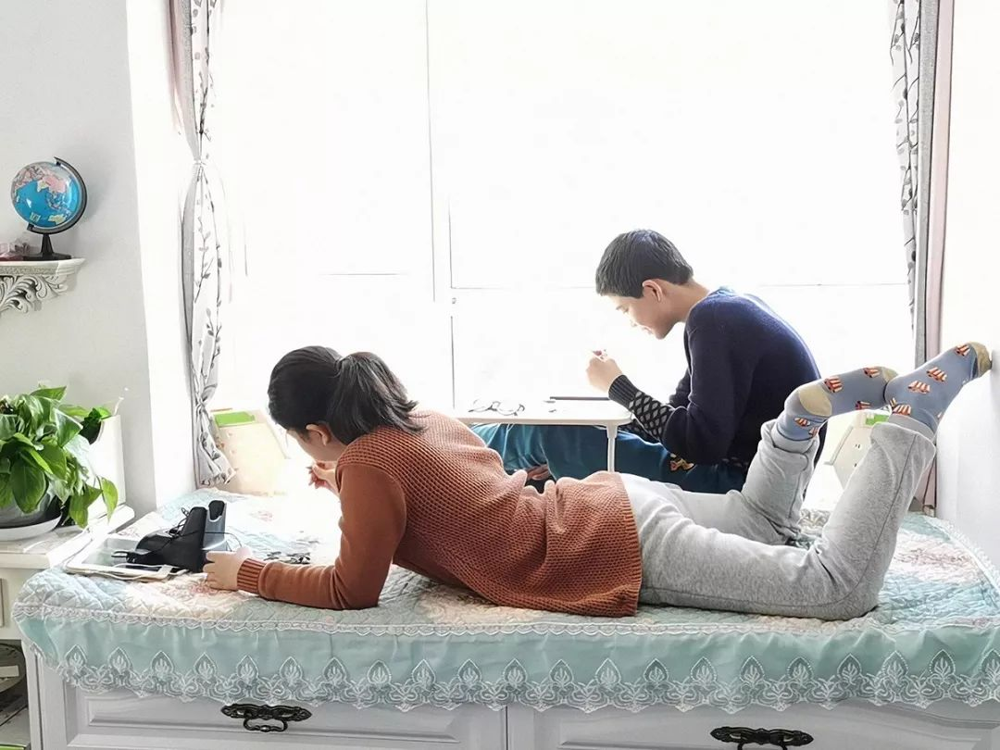
▲ 沐喜，天津家中，庚子年正月
心情紧张地在北京过了年三十，在封村封小区前，生死时速奔回天津家中，路口村口常见疫情检察员，无法出门嗮太阳，收拾出飘窗来，让孩子们在这晒晒太阳吧。
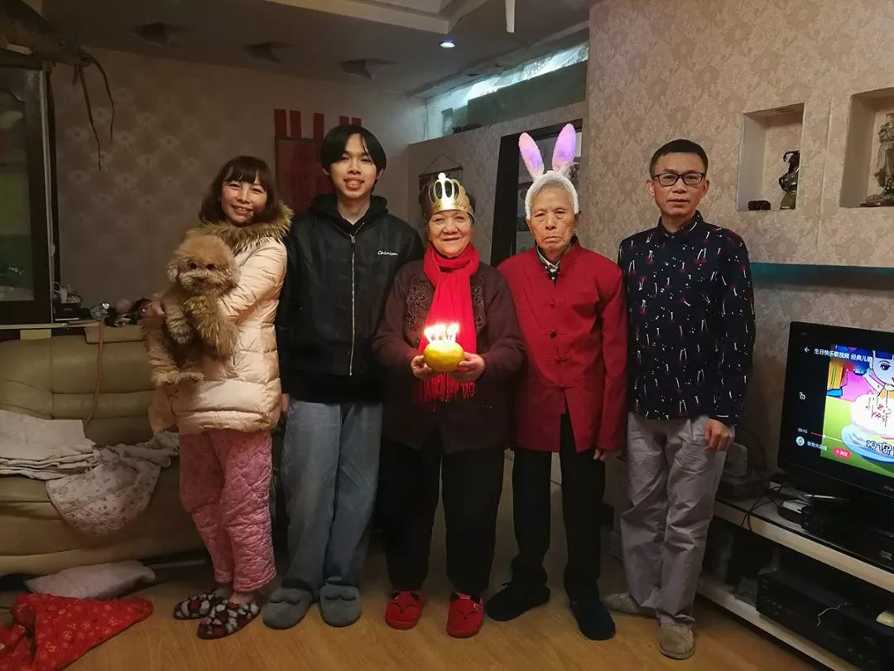
▲ 罗金倩，广西柳州家中，2020年1月31日，大年初七
大年初七是我公婆的生日。老太太满85岁了，每年的今天，姐姐妹妹们都会回来给老太太庆祝生日，经常要摆两桌。今年因为新型冠状病毒的蔓延，大家都不出门拜年了。我们也不敢出门订蛋糕。翻箱倒柜找到一小盒生日蜡烛，插到发财柑上。再给老头、老太太打扮了一番，拍了这张照片发到家族群里，让大家开心开心。
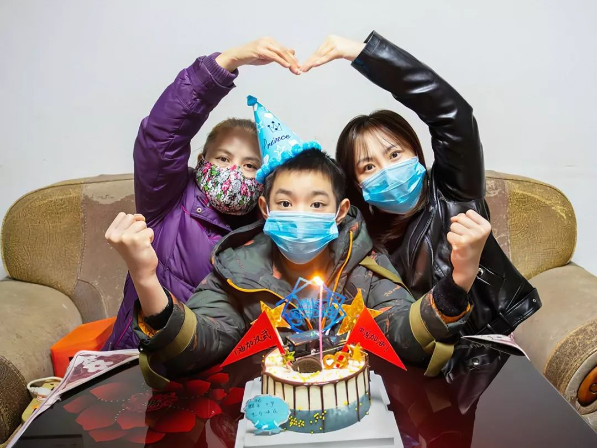
▲ 易建明，湖南省绥宁县委大院家属楼，2020年2月2日，正月初九
今天是我家外孙10岁生日。这个生日在抗击新冠状病毒的特殊日子里度过有着特别的意义，我们希望小家伙记得这个日子，开始懂得生命与健康的含义。武汉加油！中国加油！

▲ 汉江岚，湖北襄阳市家中，2020年2月2日
这是个寂静而不平静的春节，二月二日是儿子从武汉回家自行隔离期满的日子，我们换上为过年准备而但没机会穿的新衣，拍照纪念。

▲ 费季为，吉林四平家中，2020年2月2日，正月初九
202002022020是一个特别的数字。昨天我们小区发现一例新型冠状病毒感染肺炎感染者，全家人高度戒备，处处小心。在紧张之余，我们还是“全副武装”在这个特殊时点留下了这一记忆，我的外孙女出生第五十一天啦！

▲ 亚丁，浙江义乌家中，2020年1月24日，除夕夜
红红的年装带来红红的新年。响应号召，不出门不出门不出门！好好拍张全家福！
（点击蓝色文字可了解参与）
☝
征集进行中…
我们每个人都是这段历史的一部分。
· END ·
编辑 | 陈衍勋
统筹 | 风少
▼
长按识别二维码
关注风面微信号

不错过精彩内容
原文链接 备份链接 非常时期，武汉成了全国人民挂念、祈福的城市。封城后，武汉人民的真实生活是什么样？ 随着疫情援助的展开，又有哪些容易忽略的问题？ 正和岛自1月26日起特别推出《叶青：我在武汉疫区的第N天》专栏。叶青是一位定居武汉40年的 …
原文链接 备份链接 逃离大武汉|中经武汉封城日记 2020-01-24 09:00 作者：老詹 来源：中国经营网 文/老詹 今天是1月23日，农历腊月廿九。凌晨6﹕10，我在睡梦中突然被急促的电话铃声吵醒，在汉口打工的侄子大声说：“叔，快 …
原文链接 备份链接 今天是武汉封城第13天，在城内留守的900万市民，除了为核酸检测、为床位奔波的人们，还有大多数人留在家中，除了采购生活物品和倒垃圾，连家门都不出。他们怎么度过封城的日子？本文作者的经历或许能代表一些普通武汉家庭的日常。 …
原文链接 备份链接 疫情发展 根据丁香医生实时数据，截至 2020 年 2 月 4 日 18 时，全国累计确诊病例 20520 例，疑似病例 23214 例。较昨日，新增确诊病例 3284 例，新增疑似病例 5027 例。其中， …
原文链接 备份链接 - 疫 情 之 下 - 只有在这样的特殊时刻，我们才体会到平平常常的日子是多么美好，多么幸福…… ” 疫情爆发得如此迅猛，让所有人始料未及。 己亥年腊月二十九，公历2020年1月23日，我去单位上年前最后一天班，那时我 …